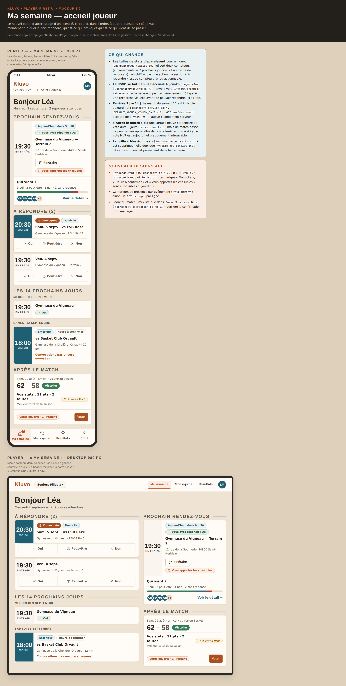
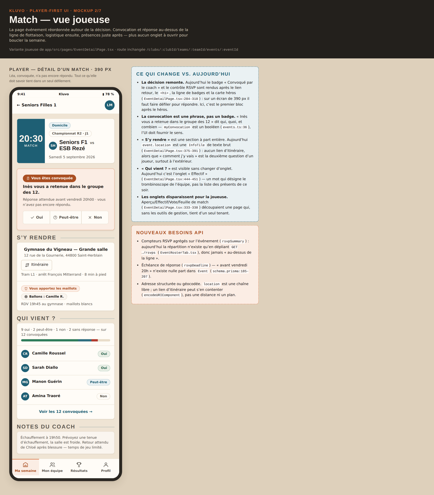
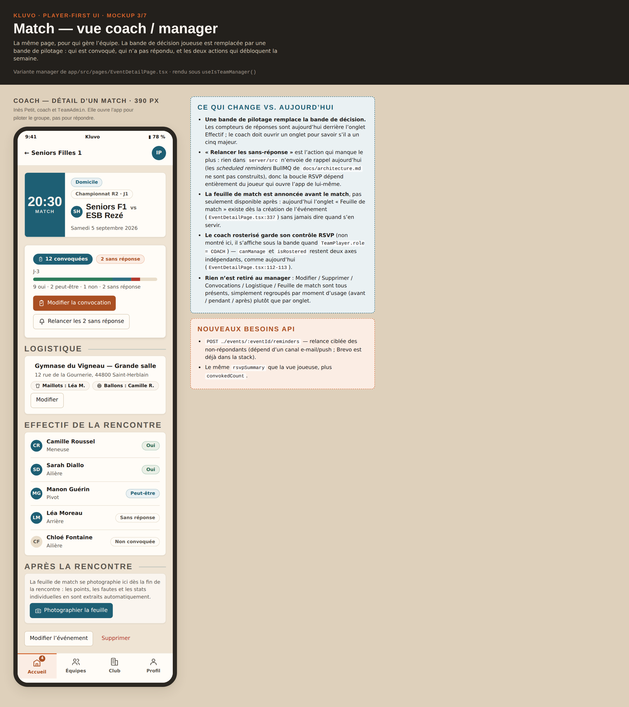
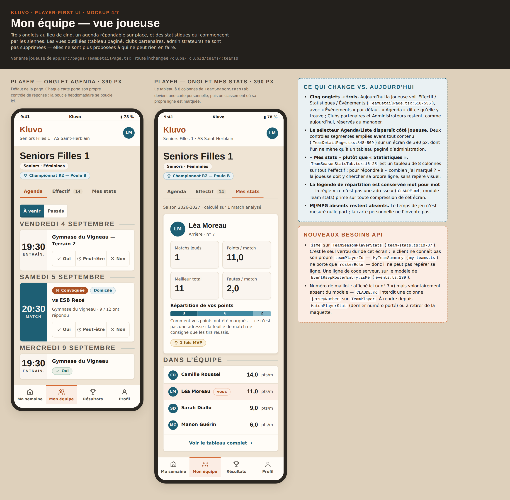
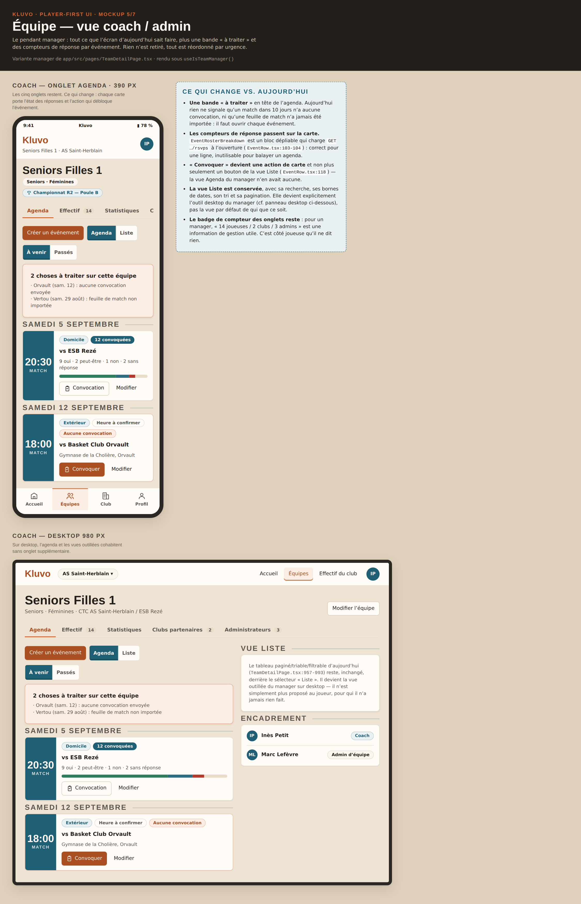
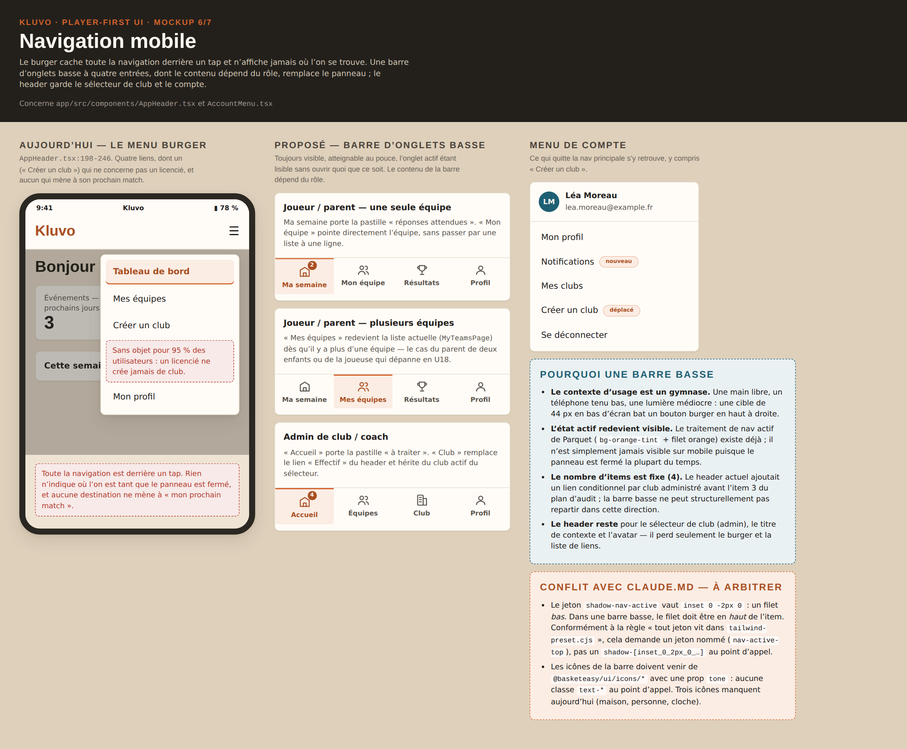
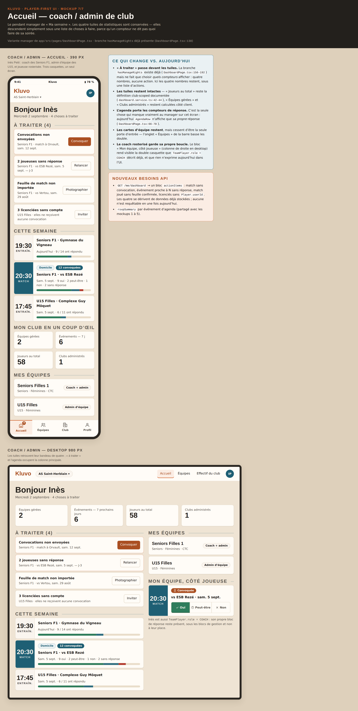
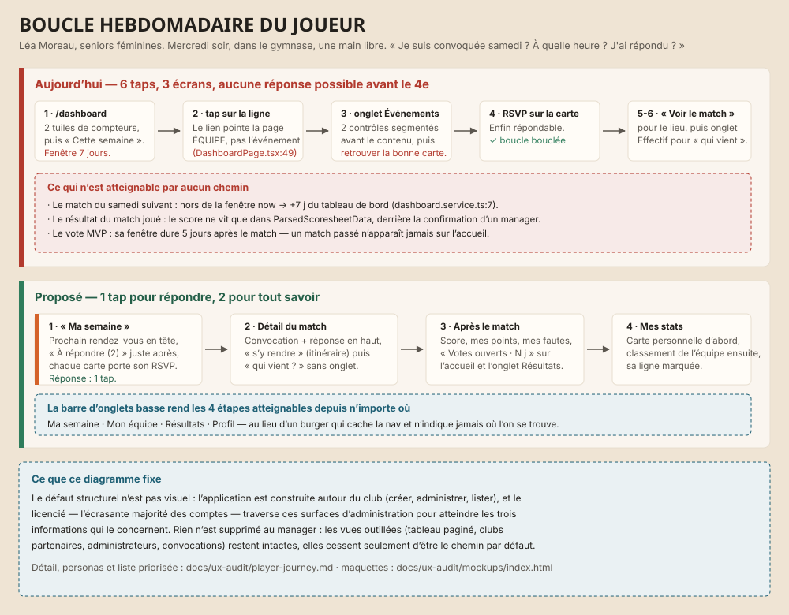
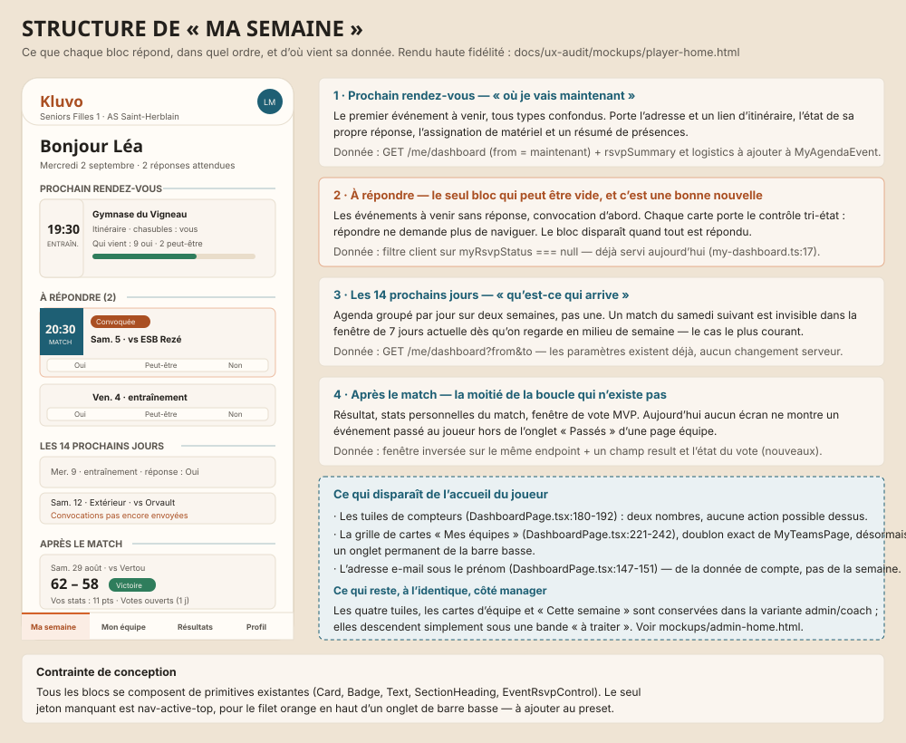
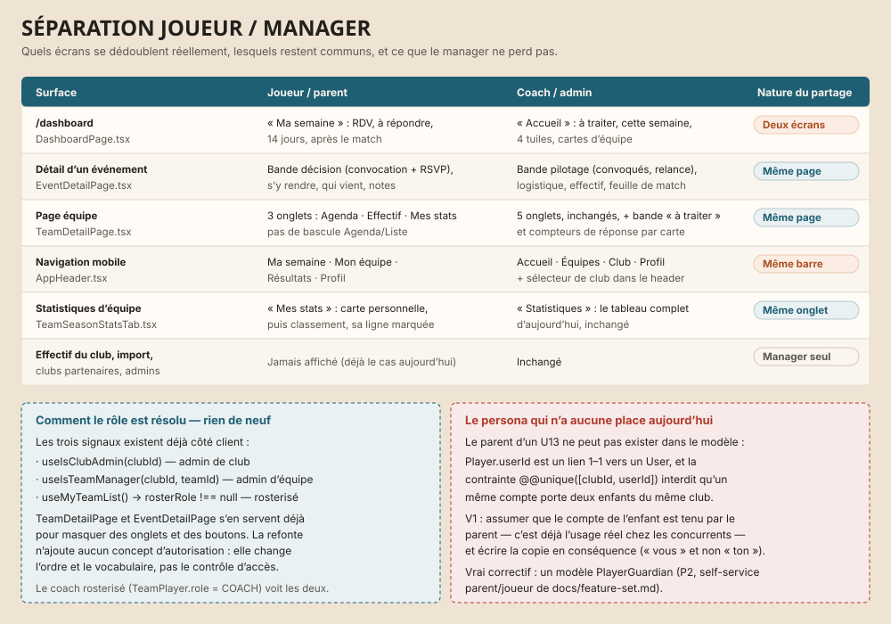

Comment lire ces planches
#EFE4D4surface #FFFCF7surface-2 #FAF5EFsunk #E9DDCAorange #D4622Aorange-text #AA4F22blue-green #1E5F74success #2F7D5Cerror #B23A2Egold #C08A2E
Ma semaine — accueil joueur
Le nouvel écran d’atterrissage : prochain rendez-vous, réponses attendues (RSVP sur place), 14 prochains jours, « après le match ». Mobile 390 px + desktop.


Match — vue joueuse
Convocation et réponse au-dessus de la ligne de flottaison, puis « s’y rendre », puis « qui vient ? ». Plus aucun onglet.


Match — vue coach / manager
La même page côté pilotage : convoqués, sans-réponse, relance, logistique, feuille de match.


Mon équipe — vue joueuse
Trois onglets (Agenda / Effectif / Mes stats), agenda répondable sur place, statistiques personnelles avant le classement.


Équipe — vue coach / admin
Les cinq onglets conservés, une bande « à traiter », des compteurs de réponse par carte. Mobile + desktop.


Navigation mobile
Le burger d’aujourd’hui contre une barre d’onglets basse à quatre entrées, déclinée par rôle, plus le menu de compte qui récupère « Créer un club ».


Accueil — coach / admin de club
Le pendant manager de « Ma semaine » : « à traiter » d’abord, les quatre tuiles conservées dessous. Mobile + desktop.


Wireframes de flux
Boucle hebdomadaire du joueur
Le parcours réel, aujourd’hui contre proposé, avec le nombre de taps par étape.


Structure de « Ma semaine »
Ce que chaque bloc répond, et d’où vient sa donnée.


Séparation joueur / manager
Quels écrans se dédoublent, lesquels restent communs.

